NCERT Solutions For Class 10 Science Chapter 11 Human Eye And Colourful World: In this article, you will find out all the necessary information regarding class 10 science chapter 11 NCERT solutions. Practicing NCERT class 10 science chapter 11 notes will help candidates to bag a good score in class 10 board exam. Further having good knowledge of the unit human eye and colorful world class 10 science NCERT Solutions will build a strong foundation in clearing the Engineering competitive exams as this unit comes under the subject Physics.
The questions in each and every exercise of Human Eye and Colourful world comes with the answer and a detailed, step-by-step solution for better understanding by the student. So Read on to find out everything about NCERT Solutions For Class 10 Science Chapter 11 Human Eye And Colourful World to make a good grade in CBSE Class 10 Board exam.
NCERT Solutions for Class 10 Science Chapter 11 Human Eye and Colourful World
Before getting into the details of NCERT Solutions For Class 10 Science Chapter 11 Human Eye And Colourful World, let’s have an overview of list of topics and subtopics under class 10 science chapter 11 NCERT solutions:
- The Human Eye And The Colourful World
- The Human Eye
- Defects Of Vision And Their Correction
- Refraction Of Light Through A Prism
- Dispersion Of White Light By A Glass Prism
- Atmospheric Refraction
- Scattering Of Light
Free download NCERT Solutions for Class 10 Science Chapter 11 Human Eye And Colourful World PDF in Hindi Medium as well as in English Medium for CBSE, Uttarakhand, Bihar, MP Board, Gujarat Board, and UP Board students, who are using NCERT Books based on updated CBSE Syllabus for the session 2019-20.
- मानव-नेत्र एवं रंगबिरंगी दुनियाँ कक्षा 10 विज्ञान हिंदी में
- Class 10 Human Eye and Colourful World Important Questions
- Human Eye and Colourful World Class 10 Notes
- Human Eye and Colourful World NCERT Exemplar Solutions
- Human Eye and Colourful World Class 10 Extra Questions
- Class 10 Science Human Eye and Colorful World Mind Map
NCERT Solutions for Class 10 Science Chapter 11 Intext Questions
Page Number: 190
Question 1
What is meant by power of accommodation of the eye ?
Answer:
The power of accommodation of the eye is the maximum variation of its power for focusing on near and far (distant) objects.
Question 2
A person with a myopic eye cannot see objects beyond 1.2 m distinctly. What should be the type of the corrective lens used to restore proper vision ?
Answer:
Concave lens.
Question 3
What is the far point and near point of the human eye with normal vision ?
Answer:
For a human eye with normal vision the far point is at infinity and near point is 25 cm from the eye.
Question 4
A student has difficulty reading the blackboard while sitting in the last row. What could be the defect the child is suffering from ? How can it be corrected?
Answer:
The child is suffering from myopia. The child should use concave lens of suitable focal length.
NCERT Solutions for Class 10 Science Chapter 11 Textbook Chapter End Questions
Question 1
The human eye can focus objects at different distances by adjusting the focal length of the eye lens. This is due to
(a) presbyopia
(b) accommodation
(c) near – sightedness
(d) far – sightedness
Answer:
(b) Accommodation
Question 2
The human eye forms the image of an object at its
(a) cornea
(b) iris
(c) pupil
(d) retina
Answer:
(d) Retina
Question 3
The least distance of distinct vision for a young adult with normal vision is about
(a) 25 m
(b) 2.5 cm
(c) 25 cm
(d) 2.5 m
Answer:
(c) 25 cm
Question 4
The change in focal length of an eye lens is caused by the action of the
(a) pupil
(b) retina
(c) ciliary muscles
(d) iris
Answer:
(c) Ciliary muscles
Question 5
A person needs a lens of power -5.5 dioptres for correcting his distant vision. For correcting his near vision he needs a lens of power +1.5 dioptre. What is the focal length of the lens required for correcting (i) distant vision, and (ii) near vision ?
Solution:
(i) ∵ Power of distant viewing part of the lens, P1 = -5.5 D
∴ Focal length of this part, f1 = \(\frac { 1 }{ { p }_{ 1 } }\) = \(\frac { 1 }{ -5.5 }\) m = -0.182 m = -18.2 cm
(ii) For near vision,

Question 6
The far point of a myopic person is 80 cm in front of the eye. What is the nature and power of the lens required to correct the problem ?
Solution:
The remedial lens should make the objects at infinity appear at the far point.
Therefore, for object at infinity, u = ∞
Far point distance of the defected eye, ν = – 80 cm

Negative sign shows that the remedial lens is a concave lens.
Question 7
Make a diagram to show how hypermetropia is corrected. The near point of a hypermetropic eye is 1 m. What is the power of the lens required to correct the defect ? Assume that the near point of the normal eye is 25 cm.
Solution:
(i) The near point N of hypermetropic eye is farther away from the normal near point N.
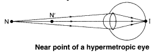
(ii) In a hypermetropic eye, the image of nearby object lying at normal near point N (at 25 cm) is formed behind the retina.
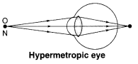
(iii) Correction of hypermetropia : The convex lens forms a virtual image of the object (lying at normal near point N) at the near point N’ of this eye.
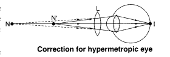
The object placed at 25 cm from the correcting lens must produce a virtual image at 1 m or 100 cm.
Therefore, u = – 25 cm, ν = 100 cm

The positive sign shows that it is a convex lens.
Question 8
Why is a normal eye not able to see clearly the objects placed closer than 25 cm ?
Answer:
At distance less than 25 cm, the ciliary muscles cannot bulge the eye lens any more, the object cannot be focused on the retina and it appears blurred to the eye, as shown in the given figure.
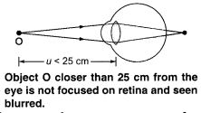
Question 9
What happens to the image distance in the eye when we increase the distance of an object from the eye ?
Answer:
The eye lens of a normal eye forms the images of objects at various distances on the same retina. Therefore, the image distance in the eye remains the same.
Question 10
Why do stars twinkle ?
Answer:
Stars appear to twinkle due to atmospheric refraction. The light of star after the entry of light in earth’s atmosphere undergoes refraction continuously till it reaches the surface of the earth. Stars are far away. So, they are the point source of light. As the path of light coming from stars keep changing, thus the apparent position of stars keep changing and amount of light from stars entering the eye keeps twinkling. Due to which a star sometimes appear bright and sometimes dim, which is the effect of twinkling.
Question 11
Explain why the planets do not twinkle ?
Answer:
The planets are much nearer to the earth than stars and because of this they can be considered as large source of light. If a planet is considered to be a collection of a very large number of point sources of light, then the average value of change in the amount of light entering the eye from all point size light sources is zero. Due to this the effect of twinkling is nullified.
Question 12
Why does the sun appear reddish early in the morning ?
Answer:
The light coming from the sun passes through various denser layers of air in the earth’s atmosphere before reaching our eyes near the horizon. Most of the part of blue light and light of small wavelength gets scattered by dust particles near the horizon. So, the light reaching our eyes is of large wavelength. Due to this the sun appears reddish at the time of sunrise and sunset.
Question 13
Why does the sky appear dark instead of blue to an astronaut ?
Answer:
As an astronaut moves away from the atmosphere of earth, the atmosphere becomes thin. Due to the absence of molecules (or dust particles) in air, the scattering of light does not take place. Thus, sky appears dark in the absence of scattering.
NCERT Solutions for Class 10 Science Chapter 11 Human Eye and Colourful World
Functioning of a lens in human eye, defects of vision and their corrections, applications of spherical mirrors and lenses. Refraction of light through a prism, dispersion of light, scattering of light, applications in daily life.
| Board | CBSE |
| Textbook | NCERT |
| Class | Class 10 |
| Subject | Science |
| Chapter | Chapter 11 |
| Chapter Name | Human Eye and Colourful World |
| Number of Questions Solved | 17 |
| Category | NCERT Solutions |
Formulae Handbook for Class 10 Maths and Science
Page 190
Question 1.
What is meant by power of accommodation of the eye?
Answer:
The power Of accommodation of the eye is the ability of the eye to observe the distinct objects clearly which are situated at a large distance from the eye. The ciliary muscles are responsible to change the focal length Of the eye lens. The value of the power of accommodation Of the normal human eye is (d = 25 cm) = 100/f = 100/d = 100/25 = 4 dioptres. The value of power of accommodation Of human eye is about 4D
Question 2.
A person with a myopic eye cannot see objects beyond 1.2 m distinctly. What should be the type of the corrective lens used to restore proper vision?
Answer:
The far point for myopic eye is 1.2m.
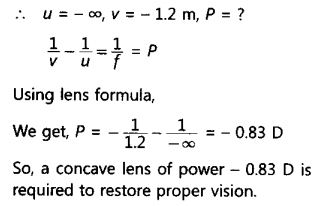
More Resources for CBSE Class 10
- NCERT Solutions
- NCERT Solutions for Class 10 Science
- NCERT Solutions for Class 10 Maths
- NCERT Solutions for Class 10 Social
- NCERT Solutions for Class 10 English
- NCERT Solutions for Class 10 Hindi
- NCERT Solutions for Class 10 Sanskrit
- NCERT Solutions for Class 10 Foundation of IT
- RD Sharma Class 10 Solutions
Question 3.
What is the far point and near point of the human eye with normal vision ?
Answer:
For human eye with normal vision, far point is at infinity and near point is at 25 cm from the eye.
Download NCERT Solutions for Class 10 Science Chapter 11 Human Eye and Colourful World PDF
Question 4.
A student has difficulty reading the blackboard while sitting in the last row. What could be the defect the child is suffering from ? How can it be corrected ?
Answer:
As the child has difficulty in reading the blackboard, he is suffering from myopia or short sightedness. To correct this defect, he has to use spectacles with concave lens of suitable focal length.
Page 197 – 198
Question 1.
The human eye can focus objects at different distances by adjusting the focal length of the eye lens. This is due to
(a) presbyopia
(b) accommodation
(c) near-sightedness
(d) far-sightedness
Answer:
(b) Human eye can change the focal length of the eye lens to see the objects situated at various distances from the eye. This is possible due to the power of accommodation of the eye lens.
Question 2.
The human eye forms the image of an object at its
(a) cornea (b) iris (c) pupil (d) retina
Answer:
(d) The human eye forms the image of an object at its retina.
Question 3.
The least distance of distinct vision for a young adult with normal vision is about
(a) 25 m
(b) 2.5 cm
(c) 25 cm
(d) 2.5 m
Answer:
(c) The least distance of distinct vision is the minimum distance of an object to see clear and distinct image. It is 25 cm for a young adult with normal visions.
Question 4.
The change in focal length of an eye lens is caused by the action of the
(a) pupil
(b) retina
(c) ciliary muscles
(d) iris
Answer:
(c) The relaxation or contraction of ciliary muscles changes the curvature of the eye lens. The change in curvature of the eye lens changes the focal length of the eyes. Hence, the change in focal length of an eye lens is caused by the action of ciliary muscles.
Question 5.
A person needs a lens of power – 5.5 dioptres for correcting his distant vision. For correcting his near vision he needs a lens of power +1.5 dioptre. What is the focal length of the lens required for correcting (i) distant vision, and (ii) near vision?
Answer:
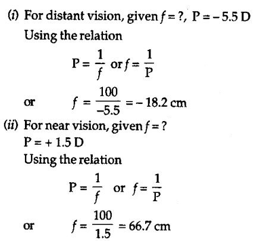
Question 6.
The far point of a myopic person is 80 cm in front of the eye. What is the nature and power of the lens required to correct the problem?
Answer:
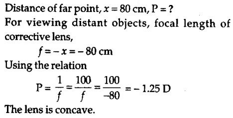
Question 7.
Make a diagram to show how hypermetropia is corrected. The near point of a hypermetropic eye ¡s 1 m. What ¡s the power of a lens required to correct this defect? Assume that near point of the normal eye is 25 cm.
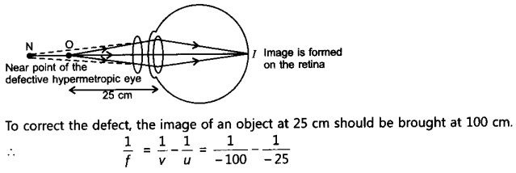
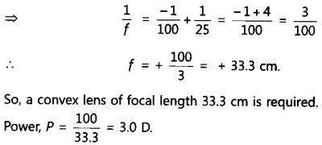
Question 10.
Why do stars twinkle?
Answer: The stars twinkle at night, because the star light reaching Our eyes increases and decreases continuously due to atmospheric refraction. When star light reaching our eyes increases, the star looks bright and when the star light reaching our eyes decreases, it appears dim.
Question 11.
Explain why the planets do not twinkle ?
Answer:
Planets being close to earth appear larger in size. A planet can be Considered as a collection of large number of small sized objects. Twinkling effect Of these objects cancel each other. so, planets do not appear to twinkle.
Question 12.
Why does the sun appear reddish early in the morning?
Answer: At sunrise, the sun looks almost reddish because only red colour which is least scattered is received by our eye and appears to come from sun. Hence the appearance Of sun at sunrise, near the horizon looks almost reddish.
Question 13.
Why does the sky appear dark of blue to an astronaut?
Answer:
At such huge heights due to absence of atmosphere, no scattering of the light takes place. Therefore sky appears dark.
Multiple Choice Questions (MCQs) [1 Mark each]
Question 1.
The human eye forms the image of an object at its [NCERT]
(a) cornea
(b) iris
(c) pupil
(d) retina
Answer:
(d) Retina is the light sensitive surface of eye on which the image is formed.
Question 2.
The human eye can focus objects at different distances by adjusting the focal length of eye lens. This is due to [NCERT]
(a) presbyopia
(b) accommodation
(c) nearsightedness
(d) farsightednes
Answer:
(b) Accommodation is the ability of eye lens to focus both near and distant objects by adjusting its focal length.
Question 3.
The change in focal length of eye lens is caused by action of [NCERT]
(a) pupil
(b) retina
(c) ciliary muscles
(d) iris
Answer:
(c) Ciliary muscles contract and extend in order to change the lens shape for focussing image ayretina.
Question 4.
The least distance of distinct vision for a young adult with normal vision is about [NCERT]
(a) 25 m
(b) 2.5 cm
(c) 25 cm
(d) 2.5 m
Answer:
(c) The minimum distance at which an object can be seen most distinctly without any strain is 25 cm.
Question 5.
At noon the Sun appears white as [NCERT Exemplar]
(a) light is least scattered
(b) all the colours of the white light are scattered away
(c) blue colour is scattered the most
(d) red colour is scattered the most
Answer:
(a) At noon, the Sun appears white because the light from the Sun is directly over head and travel relatively shorter distance. The Sun appears white as only a little of the blue and violet colours are scattered.
Question 6.
A person cannot see distinctly objects kept beyond 2 m. This defect can be corrected by using a lens of power [NCERT Exemplar]
(a) +0.5 D
(b) -0.5 D
(c) +0.2 D
(d) -0.2 D
If a person cannot see distinctly, objects kept beyond 21 m, then he is suffering from myopia.
Answer:
(b) As the person has the eye defect, myopia, therefore a concave lens has to be used whose focal length will be f = -2 m (using sign convention). Thus,
Power, P = 1/f [where, f is focal length in metre.]
= 1/-2 = -0.5D .
Question 7.
Which of the following phenomena of light are involved in the formation of a rainbow? [NCERT Exemplar]
(a) Reflection, refraction and dispersion
(b) Refraction, dispersion and total internal reflection
(c) Refraction, dispersion and internal reflection
(d) Dispersion, scattering and total internal reflection
Answer:
(c) A rainbow is caused by dispersion, refraction and internal reflection of sunlight by tiny water droplets, present in the atmosphere and always formed in a direction opposite to that of the Sun. The water droplets act like small prisms. They refract and disperse the incident sunlight, then reflect it internally and finally refract it again when it comes out of the raindrop.
Question 8.
A prism ABC (with BC as base) is placed in different orientations. A narrow beam of white light is incident on the prism as shown in figure. In which of the following cases, after dispersion, the third colour from the top corresponds to the colour of the sky? [NCERT Exemplar]
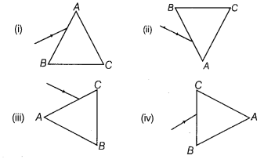
(a) Only (i)
(b) Only (ii)
(c) Only (iii)
(d) Only (iv)
Answer:
(b) In (ii) case, after dispersion, the third colour from the top corresponds to colour of the sky, i.e. blue.
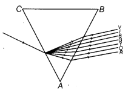
Question 9.
A student sitting on the last bench can read the letters written on the blackboard but is not able to read the letters written in his text book. Which of the following statements is correct?
(a) The near point of his eyes has receded away
(b) The near point of his eyes has come closer to him
(c) The far point of his eyes has come closer to him
(d) The far point of his eyes has receded away
Hypermetropia may have blurred vision to a person when looking at an object close to them and clearer 1 vision while looking at an object at the distance.
Answer:
(a) The student sitting on the last bench can read the letters written on the blackboard but is not able to read the letters written in his text book because he is suffering from hypermetropia or far sightedness. He can see distant objects clearly but cannot see nearby objects distinctly.
Question 10.
In the following diagram, the path of a ray of light passing through a glass prism is shown below.
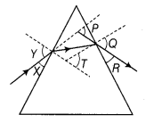
In this diagram, the angle of incidence, the angle of emergence and the angle of deviation respectively, are [CBSE2014]
(a) X, R and T
(b) Y, Q and T
(c) X, Q and P
(d) Y, Q and P
Answer:
(d) Angle of incidence is the angle made by the incident ray with the normal to the first surface of prism, which is shown by angle Y. Angle of emergence is the angle made by the emergent ray with the normal to the surface when it comes out from the prism after refraction, which is shown by angle Q. Angle of deviation is the angle between the incident ray and the emergent ray, which is shown by angle P.
NCERT Solutions for Class 10 Science Chapter 11 Human Eye and Colourful World (Hindi Medium)
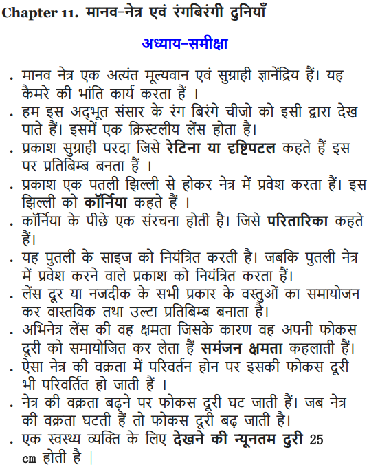
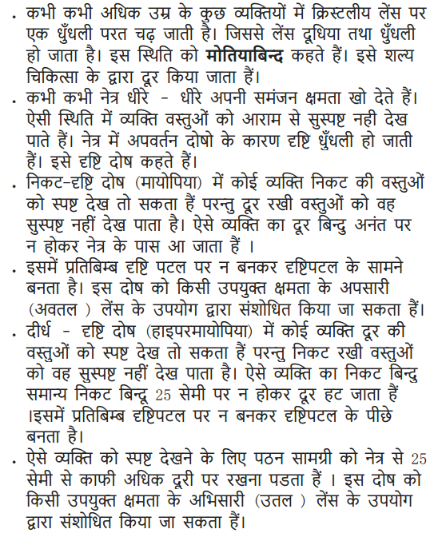
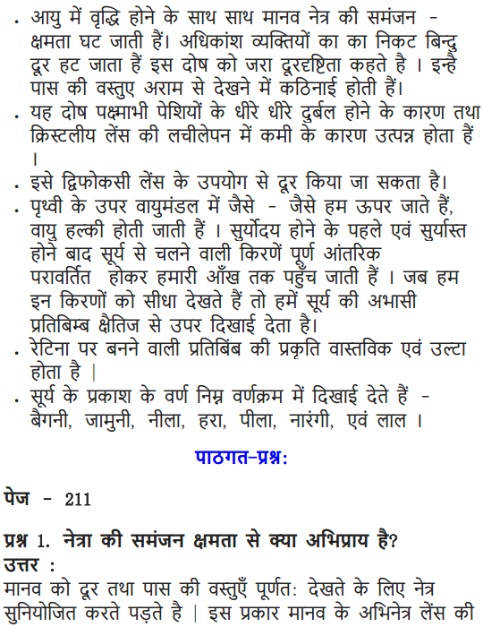
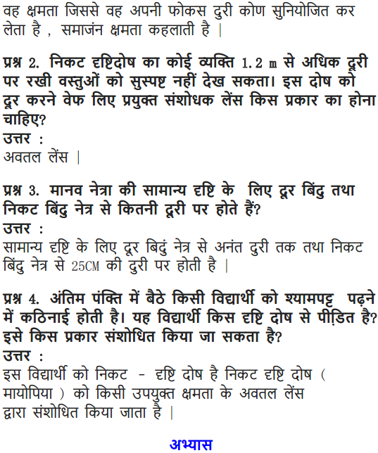
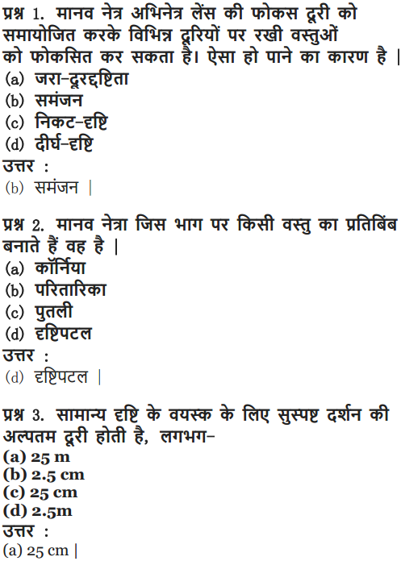
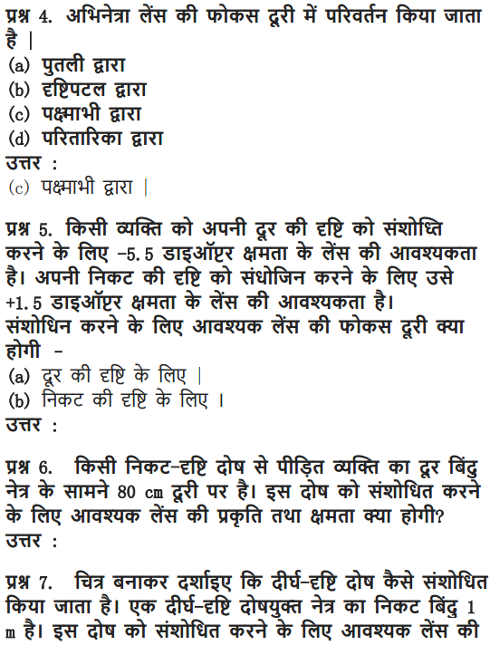
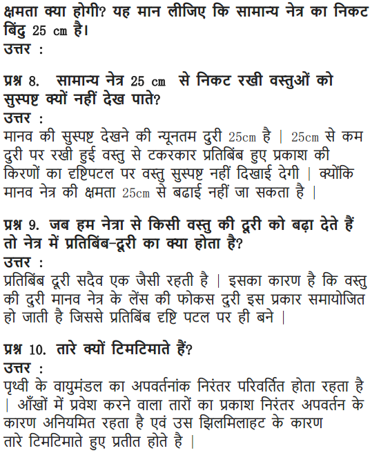
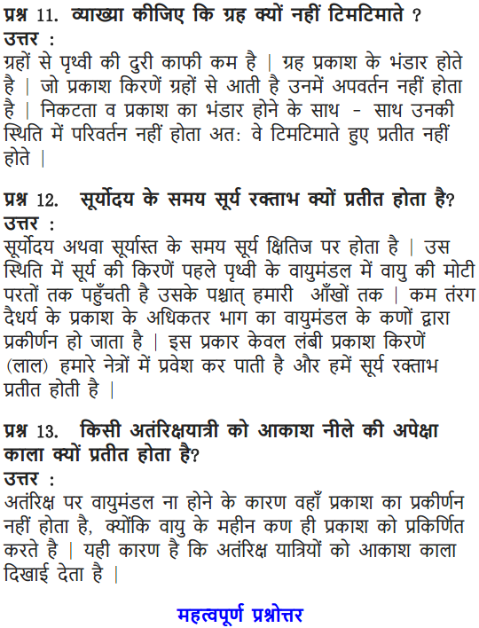
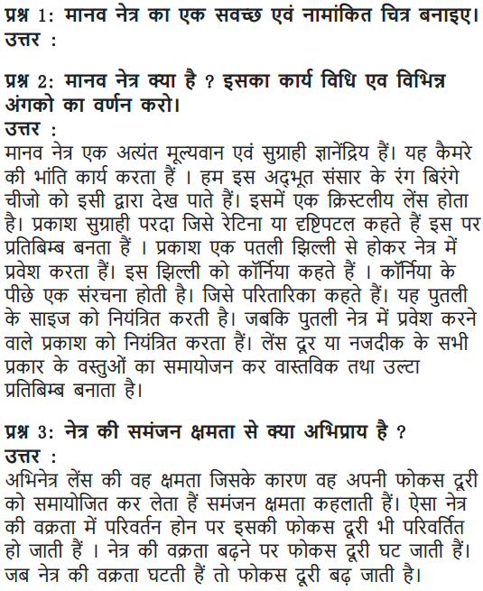
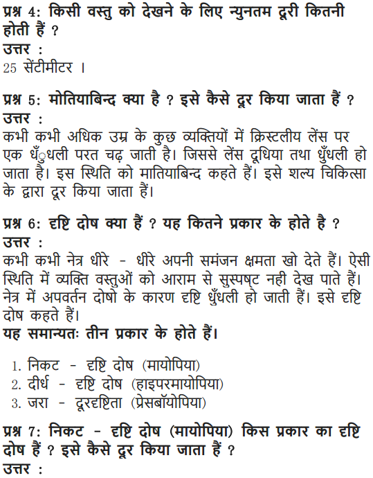
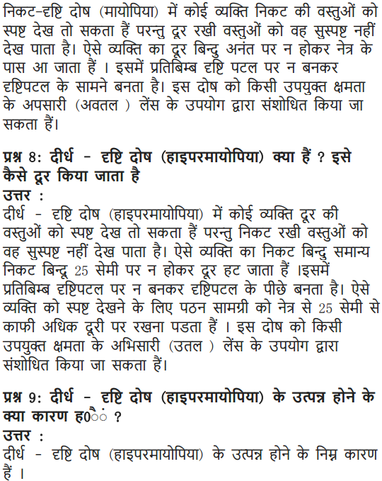
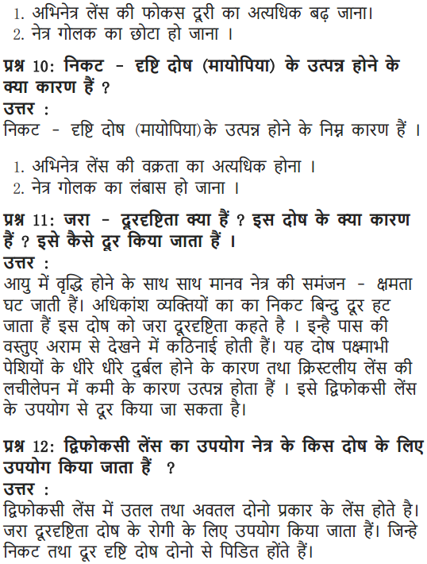
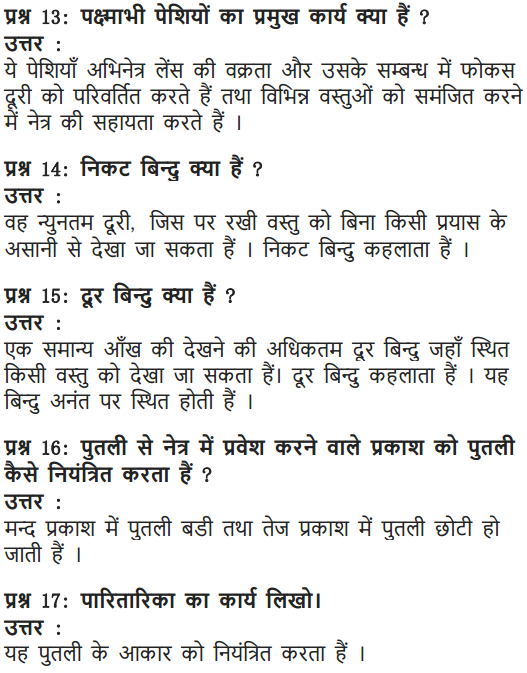
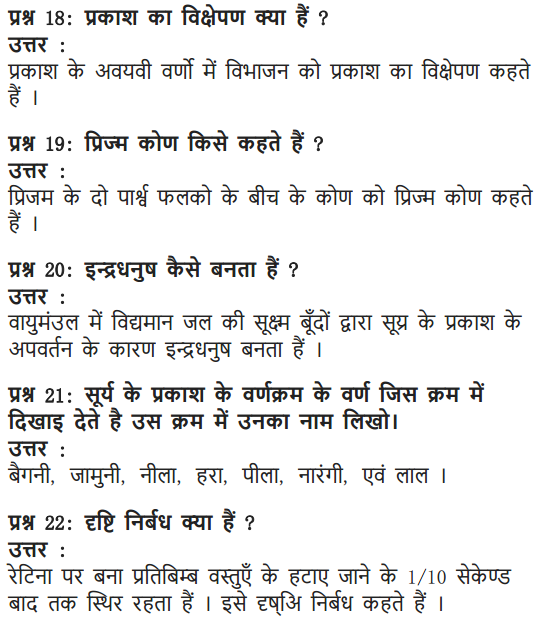
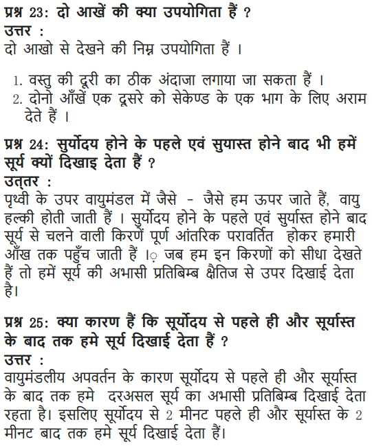
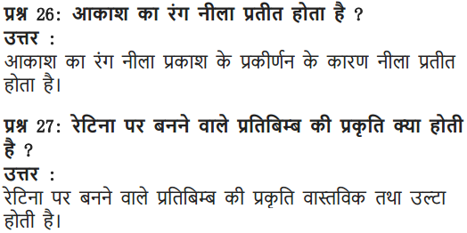
Class 10 Science Human Eye and Colourful World Mind Map
Human Eye
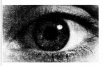
The organ which gives us the sense of light or enables us to see. It interprets the shapes, colours and dimensions of the
Parts of the Human Eye
Retina: It is a light sensitive screen on which image is formed.
It contains rods sensitive to intensity of light and cones sensitive to colour.
Cornea: Thin membrane acts like a lens which allow light to enter the eye.
Sclera: Outer part of the eye, protects interior of the eye.
Eye Lens: Convex lens made of transparent, crystalline and flexible jelly like material.
Refractive index of eye lens is 1.437
Ciliary Muscles: Modify the shape of eye lens.
Pupil: Hole in the middle of iris through which light enters.
Iris: Controls the amount of light entering the eye by changing the size of pupil.
Optical Nerve: Nerves take the image to the brain in the form of electrical signals.
Defects of Human Eye
Myopia or Short Sightedness: can see nearby objects but cannot see far off objects distinctly. Corrected by using a concave lens.
Hypermetropia or Long Sightedness: can see far off objects clearly but cannot see nearby objects clearly. Corrected by convex lens
Presbyopia: It is due to lessening of the flexibility of the crystalline lens and weakening of ciliary muscles. Corrected by using bifocal lenses.
Astigmatism: Refractive problem responsible for blurry vision. Corrected by using cylindrical lenses.
Cataract: It is a clouding of the lens in the eye. Corrected using cataract surgery
Power of Accommodation
The ability of the eye lens to adjust its focal length so as to see the objects clearly located anywhere. Near point of the human eye is 25 cm and far point of the human eye is infinity.
| Object | Ciliary muscles | Suspensory ligaments | Muscle tension on lens | Lens shape |
| Near | Contract | Slackened | Low | Thick |
| Distant | Relax | Stretched | High | Thin |
Persistence of Vision
Image of any object seen persists on the retina for 1/16 second even after the removal of the object. This property is used in cinematography.
Reason for Hypermetropia
- Increase in focal length of eye lens
- Shortening of eye-ball
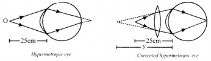
Reason for Myopia
- Excessive curvature of cornea
- Elongation of eye-ball
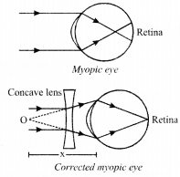
Refraction
Bending of light when it passes obliquely from one medium to another medium
Dispersion
Splitting of white light into its component colours – VIBGYOR.
Red colour deviates least and violet deviates most

Cause of Dispersion
Refractive index of material for different wavelengths is different.
µ ∝\(\frac{1}{\lambda}\) µv > µr
Spectrum
Band of seven component colours VIBGYOR on a white screen
Rainbow
Seven colours band of sunlight in the form of bow in the sky. It is formed due to reflection, refraction and dispersion of sunlight by tiny water droplets. To observe rainbow, observer should stand with its back towards sun.
Colour
The sensation received by the eye (rod cells of the eye) due to light coming from an object.
Primary Rainbow
- Two refraction and one total internal reflection
- Subtends an angle of 42° at the eye of the observer
- Innermost arc is violet and outermost is red
- More bright
Secondary Rainbow
- Two refraction and two total internal reflection
- Subtends an angle of 52.5° at the eye
- Innermost arc is red and outermost is violet
- Less bright in comparison to primary rainbow
Atmospheric Refraction
Phenomena due to Refraction of light by atmosphere
-
- Twinkling of stars
- Stars seen higher than they actually are
- Advance sunrise and delayed sunset
- Flattering of the sun at morning and evening
Scatttering of Light
- Rayleigh scattering Intensity of scattered light ∝ 1/λ4
- Tyndall effect The smoke particles become visible
- The reddening of the sun at sunrise and sunset
- Blue colour of sky
- The sky looks dark in absence of atmosphere
- Danger signals are of red coloured
Now that you are provided all the necessary information regarding NCERT Solutions For Class 10 Science Chapter 11 Human Eye And Colourful World and we hope this detailed article on class 10 science chapter 11 NCERT solutions is helpful. If you have any questions related to this article or NCERT Solutions For Class 10 Science Chapter 11 Human Eye And Colourful World, reach ys through the comment section below and we will get back to you as soon as possible.
NCERT Solutions for Class 10 Science All Chapters
- Chapter 1 Chemical Reactions and Equations
- Chapter 2 Acids, Bases and Salts
- Chapter 3 Metals and Non-metals
- Chapter 4 Carbon and Its Compounds
- Chapter 5 Periodic Classification of Elements
- Chapter 6 Life Processes
- Chapter 7 Control and Coordination
- Chapter 8 How do Organisms Reproduce?
- Chapter 9 Heredity and Evolution
- Chapter 10 Light Reflection and Refraction
- Chapter 11 Human Eye and Colourful World
- Chapter 12 Electricity
- Chapter 13 Magnetic Effects of Electric Current
- Chapter 14 Sources of Energy
- Chapter 15 Our Environment
- Chapter 16 Management of Natural Resources